PIFSC Buoy
PIFSC Spar Buoy (page in progress)
The purpose of the PIFSC buoy is to help track, find, and support the drifting recorder. We will be using these on the CalCurCEAS 2024 cruise along with our pole buoys. The PIFSC buoy consists of;
- PCV Head Piece: PVC head piece that unscrews an encloses spot GPS devices
- Float collar: High density foam collar that bolts around main body of buoy
- Main PVC body: Enclosed main PVC body to help keep the buoy afloat
- Spar whip: Blue steel line that attaches to the the main body via a bolt sheathed in a PVC pipe. The other end attaches to the top end of the array.
- Hand Strap: Blue steel line that attaches to the float collar and the bottom of the main PVC body. Used to pull the buoy onto the vessel
- Grappling point: Line attached to the float collar and surface buoy. Used to throw a grappling hook or gaff to retrieve buoy
- Surface buoy: Surface float that attaches to locking collar
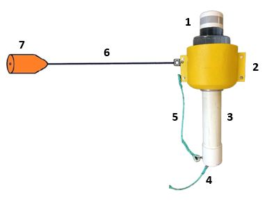
Getting started with Assembly
Check the hand strap that has been stored. Straighten it out
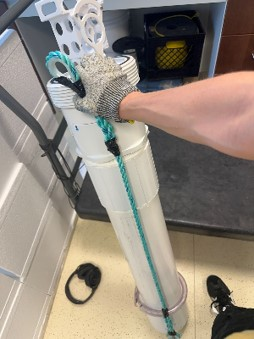
Hand strap Unpack the spar whip under the main body.
- You may need to remove the eye bolt to easily do this
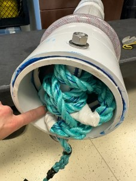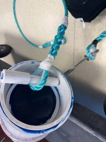
Unpack O-Rings and inspect for damage. Insert into union.
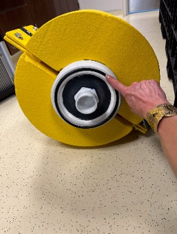
Attach Spot holder onto small pipe on bulkhead. Secure with fastener and space spots and battery pack inside.
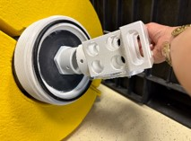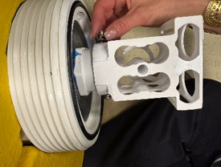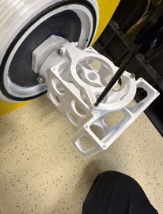
Secure head piece on
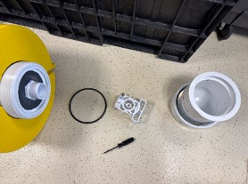
Match up float collar pairs with fastener assemblies
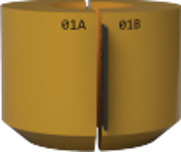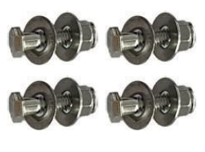
Attach hand strap to hole on assembly plate of floating shackle
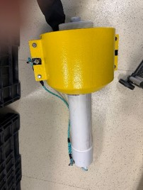
Tighten hose clamp (plastic encased metal clamp) up underneath the yellow float collar to keep it in place.
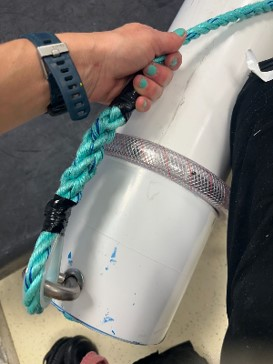
Attach trailing buoy to the floating collar using a shackle.
Before each deployment Tips
- See the following link for checklists from PIFSC. W
Note: We are still working on improving this design– all suggestions are welcome!